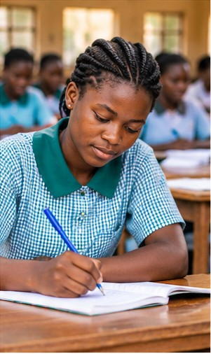
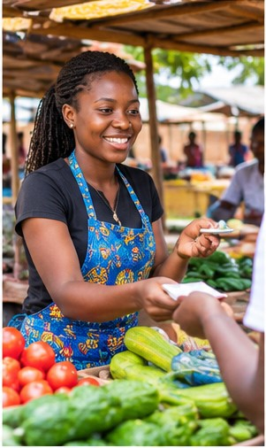
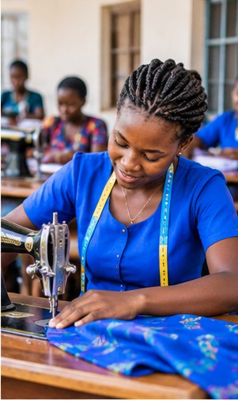
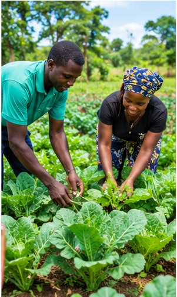
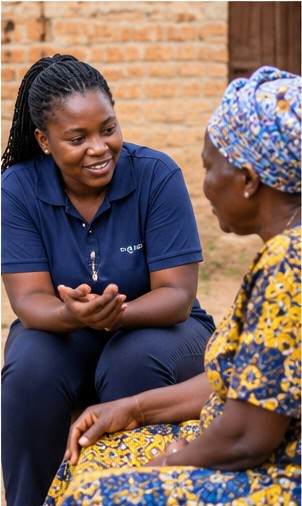
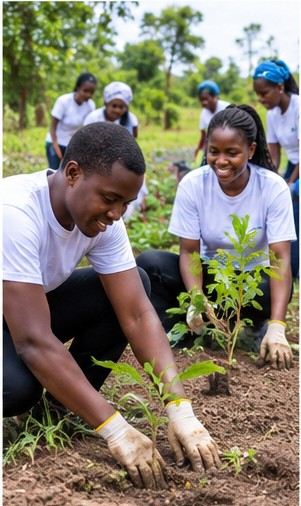

01
Second-Chance Education Programme
Support access to education for vulnerable children and school dropout girls, and promote second-chance education opportunities.
Our programmes reflect the priorities and objectives of the Bright Futures Foundation Organisation Profile.

Support access to education for vulnerable children and school dropout girls, and promote second-chance education opportunities.

Build confidence and resilience, promote positive mental wellbeing, connect beneficiaries with mentors and role models, and create safe and supportive spaces.

Build leadership and life skills while promoting child protection, gender equality, and awareness of rights and responsibilities.

Promote entrepreneurship and business development, facilitate livelihood opportunities, and strengthen access to markets and economic opportunities.

Provide vocational skills development and practical skills that help build independence and sustainable livelihoods.

Improve financial literacy as part of economic empowerment and sustainable livelihoods.

Promote agroecology and sustainable farming practices, support food security and climate resilience, and encourage green enterprises.

Promote positive mental wellbeing, strengthen community participation, and create safe and supportive spaces.

Promote biodiversity conservation, environmental stewardship, and sustainable environmental practices.

Strengthen volunteerism and community participation by connecting people willing to give time, knowledge, mentorship, and support.